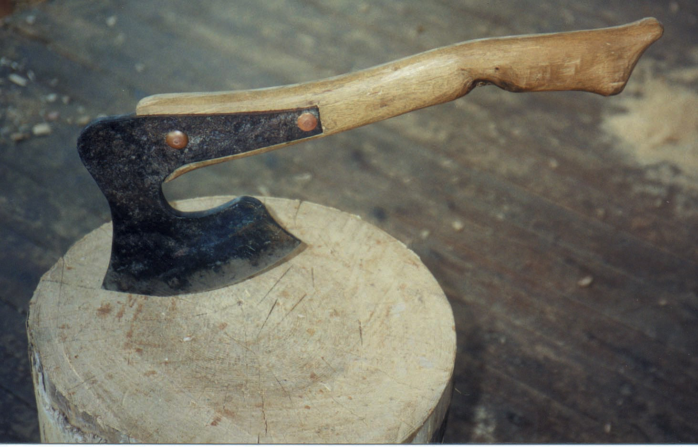
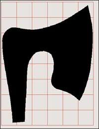

Bill Coperthwaite writes about finding beauty, justice and pleasure in mastering the everyday tasks and skills of self-reliance. The following is an excerpt from his book, A Handmade Life: In Search of Simplicity.
It is hard to find a good broad hatchet - a small, broadaxe with a wide cutting edge beveled on only one side, like a chisel; this special bevel makes it easier to hew to a line. After 40 years of hunting in antique shops and flea markets, I have found only two broad hatchets that passed muster. And for friends who sought one of their own, the outlook was also discouraging: They could get one made - if they happened to have a good design, if they knew a good blacksmith and if they could afford the price.
Or they could make an axe themselves, but by the time they had learned to forge a fine one, they would have become blacksmiths. This is an elite tool.
While traveling through Japan, in the Tosa region of the island of Shikoku, I was surprised by the number of blacksmiths. Each village had its own smith, and they all could make excellent edge tools. It was delightful to see the grace and skill of those smiths. I became friends with one who made a broad hatchet to my specifications. Twenty years went by, and in the interim I studied many axes and blended what I learned into my concept of an ideal broad hatchet.
A few years ago, I carved a wooden model and sent it off to my blacksmith friend in Shikoku. Yes, he would make it for me. Two years passed, and it did not appear. I assumed the project was forgotten. While visiting Italy, I came upon an elderly smith who had made axes years ago. I carved another pattern, and he forged the axe. Now, these are far from democratic tools. To get one you first have to design it and then know a smith in Japan or Italy or wherever who is able and willing to make an axe from your design.
I doubted the axe from Japan would materialize, and the Italian smith was old and sick, and probably would not make another. Good broad hatchets for students and friends were as elusive as ever. And though this axe adventure was exciting, and I had acquired some fine ones, we badly needed to have some inexpensive ones available.
While I was studying in Switzerland, the breakthrough came. The tiny fellow who lived upstairs (and works mostly at night) shouted “Eureka!” He presented me with a full-blown design for a democratic axe.
I could hardly wait to get back to my bench. For steel, there was an ancient plow point of about the right thickness lying behind the barn. Into the bonfire it went, and when it glowed red, we heaped ashes over it and let it remain until morning, cooling slowly and releasing its hardness. The next day, I reheated and hammered it flat using a handy ledge for an anvil. When the steel cooled, I drew the pattern on it. Three hours of work at the vise was needed to cut it to shape with a hacksaw, and then another hour to dress it with files.
For us amateurs in axe-making, there are two major difficulties. One of these is forging the eye of the axe - the hole into which the handle is inserted in a conventional axe. This democratic design eliminates the eye. The other difficulty is tempering, or bringing the steel to the correct hardness. Smiths have long been respected for their skill at the magical process of tempering steel, which requires good judgment and much experience to do dependably.
After a good deal of pondering, experimenting and reading all that I could find on tempering, some of the mystery began to fade. Before tempering, the steel must be hardened by being brought to red hot and then plunged into water. Then it seemed that tempering was merely a matter of temperature control, so we put the axe in an oven set at 475 degrees for half an hour and let it cool slowly. That worked!
Now, you smiths may object, reminding us that a tool like an axe needs to be soft in the eye to resist breaking. To this charge I plead nolo contendere. This design, however, is made with a short handle for use on a block, and such hatchets do not undergo the same severity of blows that other axes do.
For the first time, we now have a democratic axe - an axe that most anyone who wants one can have. (You say you never knew you needed an axe, and I say, very well. Even so, here we have another example of one more democratic tool, which will make designing the next one a little easier, whatever its purpose.)
This experience with the broad hatchet is important for me on several levels. First, it has been an exciting adventure all along the way, from learning to appreciate the variations in different forms of such a basic tool, to designing my own which others have made, to ultimately making my own. Another level of the adventure was to help others make their own hand axes and in the process gain the confidence that comes from making a tool. This process demonstrates how we can have adventure in a variety of ways: Designing, working with the hands and working with the mind as we carry the concept of democratic things further.
Another value this experience had for me is the breaking of mental and social barriers, which we need to be able to do if we are to solve our problems and create a decent society that works for all people. At times, the outlook appears dark - it would seem our problems are insurmountable. As with this little hand axe, I was quite sure that I would never make my own. And yet, without consciously focusing on the problem directly, unconscious forces were at work and discovered a solution.
This gives me hope that if we can continue searching for solutions, caring and supporting one another, we may be able to find the solution to even our worst problems.
P.S. The broad hatchet from Shikoku finally arrived. It is a veritable gem. Actually, two came - a left- and a right-handed one - polished to a mirror finish and gently wrapped in small white towels.
1. Enlarge the pattern (see Image Gallery for pattern) so the grid sections are 1-inch squares and trace the pattern on annealed (temperable) steel, five-sixteenths of an inch thick.
2. Cut out the axe head with a hacksaw.
3. Smooth all edges with a file, and file the bevel to make the cutting edge. (For a right-hander, the bevel should be on the right, for a lefty on the left.)
4.rill two rivet holes.
5. The face should be slightly hollowed, like a shallow gouge. To do this, carve a hollow (6 inches long and a quarter of an inch deep) in a chopping block. Heat the axe head until it is glowing red, then hammer it into the hollow with the bevel side up.
6. To harden the steel, heat it to glowing red and plunge it into cold water.
7. To temper the steel, put the axe head in an oven at 475 degrees for about 30 minutes and allow to cool slowly.
8. Carve a handle of hardwood in the form shown in the photograph and rivet it to the axe head. You can customize the handle’s curve and weight to your own preferences.
|
 PHOTO: BILL COPERTHWAITE This broadaxe for hewing logs into beams is unique because most any independent homesteader can forge this design with just a little blacksmith experience. This design allows the maker to connect the blade to the side of the handle instead of having to forge an eye like those found on conventional axes. |
 MOTHER EARTH NEWS STAFF Enlarge this pattern to trace out your broadaxe. |
|